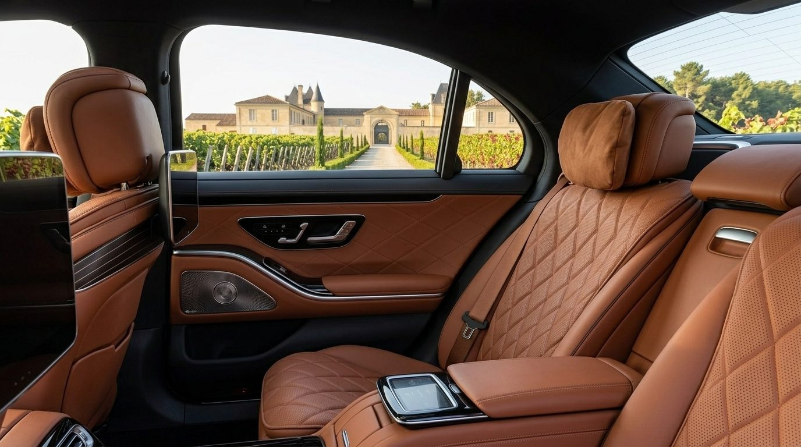

Le journal
Chauffeur privé, wine tours & vignoble bordelais
Conseils, itinéraires et bonnes pratiques pour vos déplacements privés à Bordeaux : longs trajets, visites de la ville, wine tours dans le Médoc, à Saint-Émilion ou à Sauternes.

Voiture avec chauffeur privé pour longue distance : pourquoi faire ce choix ?
Fatigue, vigilance, imprévus : parcourir de longues distances au volant a un coût. Découvrez pourquoi de plus en plus de voyageurs confient leurs longs trajets à un chauffeur privé.
Lire l’article
Comment un chauffeur privé change votre façon de visiter Bordeaux
Circulation dense, stationnement compliqué : découvrir Bordeaux ne s’improvise pas. Voici comment un chauffeur privé transforme chaque trajet en moment agréable.
Lire l’article